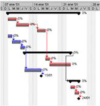

Intelligent Logistics and Production Sytstems
|
|
This
research line is focused on the development of technologies based on
Artificial Intelligence and Operations Research, for solving industrial optimization problems such as Production Planning & Scheduling, Computer Aided Process Planning (CAPP) and Collaborative Optimization.
|
|
|
Computer-Aided
Process Planning (CAPP)
|
 |
As time goes by, products grow in complexity, wich makes it difficult to design optimal manufacturing process plans. Computer Aided Process Planning (CAPP) aims at generating products process plans automatically, starting from a formal representation of the design.
Most of the CAPP systems proposed so far have limitations
|
|
which
make it difficult their implementation or reduce their effectiveness:
on the one hand there are knowledge base systems which do not support
optimization; on the other hand there are systems specific to an
industry or to a type of a product which make the system difficult to
adapt to other cases. Besides, generative CAPP systems do not allow
manufacture engineers to participate on the decision making process
during the process planning.
|
 |
This project aims at developing a CAPP system based on intelligent agents,
which can be adapted to different industries and manufacturing
resources, and allows manufacturing engineers to participate
interactively through a mixed initiative interaction schema with the intelligent agent.
|
Generation of Scheduling Engines
|
Production
Scheduling is an important function in the logistics management of the
company as well as in the supply chain management. APS (Advanced
Planning and Scheduling) systems are in charge of this function. If the
scheduling process is complex and the APS systems available in the
market do not satisfy the needs, then it is necessary to build it.
|
|  |
The APS core is the scheduling engine.
Although many techniques to solve scheduling problems exist, little is
known about methodologies to develop scheduling engines, this is the
great gap between the academy and the industry. Normally a scheduling
engine is developed from scratch, which requires too much time and
money. Other approaches use frameworks with specialized components,
which are very difficult to learn and they do not assure to reduce
significantly the development times.
|
|
|
This project proposes to build an automatic generator of scheduling engines
for specific domains. The final product is a scheduling engine, totally
operative and adapted to the customer’s needs, obtained in the
same time that takes to model an instance of domain. The modeling
language must be adjusted to the terminology of the specific domain and
to be flexible to model both usual and variable features of the domain.
|
Scheduling technology for industrial domains
|
Production
Scheduling within industry is a demanding activity which requires much
computing power to be carried out. Many R&D projects have been
carried out in the past by researchers of the CEAL, by means of which
much knowledge and expertise has been accumulated.
As a result, several technology transference projects in the production
scheduling domain have been carried out, such as the PAP (Advanced
Production Planning) system for the flexible packaging industry.
|
|